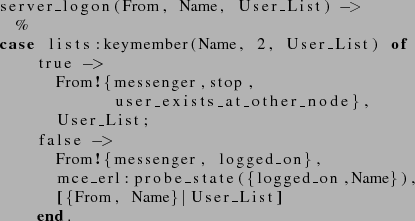
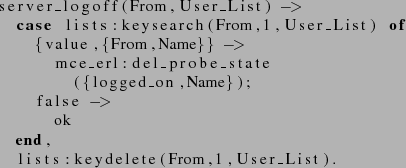
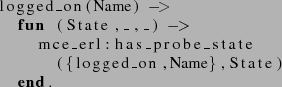
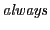
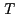
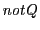

Next: Verification methodology Up: Model checking using Büchi Previous: Using probe actions to
Working with probe actions in LTL formulas can sometimes be difficult, as we have manually ``remember'' the occurrence of important actions in the formula. In formulas (1) and (2) above, this was accomplished using the until formula.
Instead of using probe actions we can use so called ``probe states''. In contrast to probe actions, which are enabled in a single transition step only, such probes are persistent from the point in the execution of the program when they are enabled, until they are explicitly deleted.
As an example we instrument the login code of the server in
messenger.erl to record, using the function
mce_erl:probe_state, the fact that a user has logged in:

Similarly we delete the probe state using the function
mce_erl:del_probe_state when a user logs out:

We can test for the existence of a probe state using the function
@mce_erl:has_probe_state@ as exemplified in the function
@logged_on@ in the basicPredicates.erl file which checks if
a user is logged on:

This predicate will be abbreviated as ``t'' below.
We can now reformulate the second property above, removing the until operator and one eventually operator with the  operator, which holds if its argument holds over the whole execution trace:
"always ((P and T) => eventually (R or not T))"
Note that since  is a state predicate we can safely negate it to compute its logical negation (``the user is not logged on'') whereas the negation of the action predicate  in properties (1) and (2) only expresses that the ``logon action is not present in the current transition'' (but it may have occurred earlier in the execution of the program).
Orosz György 2010-06-02